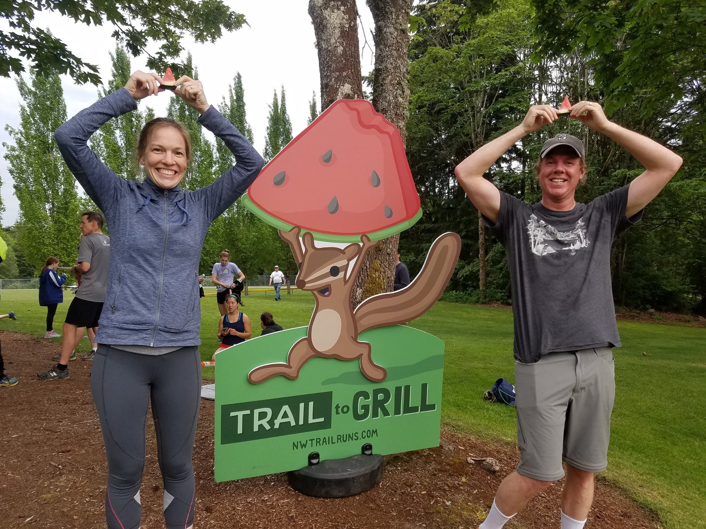

MerGeo
As Marketing Manager of a local running and adventure events company, I both oversaw and implemented all aspects of marketing.
My largest project was to rebrand MerGeo and its three entities (Northwest Trail Runs, Street Scramble, MerGeo Nav Races). Design challenges included:
- Unifying the disconnected brands to enhance cross-promotion
- Modernizing the look to appeal to contemporary tastes
- Imbuing it all with a friendliness that would make athletic events feel approachable
I accomplished a large part of this through a complete visual redesign. Drawing inspiration from outdoor brands, I used amiable hand drawn lines and bright colors that were slightly desaturated to have more affinity with nature than with screens. I implemented these designs in print, online, and on-site at our events.

With very limited experience, I designed new website layouts that would be mobile-friendly, on-brand, and prominently feature important events while still providing quick access to what users wanted most. I started with sketches, then moved to Photoshop when I was ready to refine. While working with a Developer to build these designs, I found myself wanting to learn more and more about designing for the web, which is what began my journey to User Experience Design!
Photo credit: Gretchen Walla, Northwest Trail Runs
After learning about UX, I discovered that I was already implementing some UX processes, and sought ways to apply it further. I had already been using quantitative data from e-mail campaigns, social media advertisements, and website visits to improve our click-through traffic and ultimately, registration numbers for events. UX inspired me to gather data beyond online clicks, so I surveyed our participants to learn more about their experience and identify how we could improve. This empowered me to make proposals not based just on a hunch, but on information gathered.
Eventually, I decided to take a bootcamp course on UX Design, and the rest of that journey can be found in this portfolio.
My designs persist today at:
A couple of friendly characters I designed to make Northwest Trail Runs events more inviting: